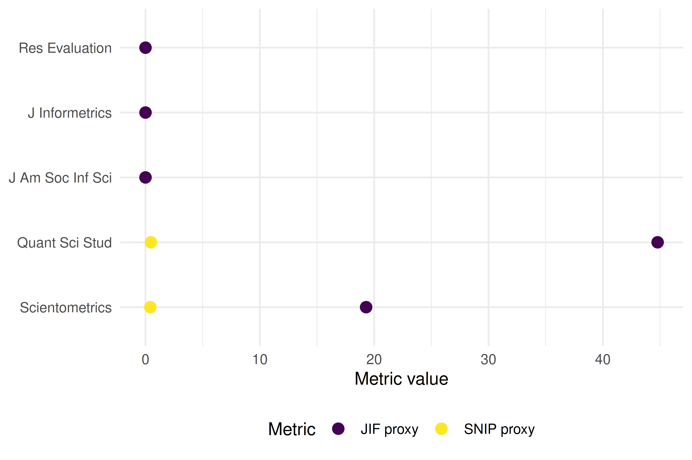

12 Journal Metrics
12.1 Learning objectives
After completing this chapter, you will be able to:
- Describe how the Journal Impact Factor, CiteScore, SNIP, SJR, and Eigenfactor are computed
- Explain why network-based journal metrics differ from simple citation ratios
- Compute JIF-like and SNIP-like proxies from OpenAlex data
- Articulate why proxy values differ from official proprietary metrics
- Evaluate journals using multiple indicators rather than a single number
12.3 Conceptual background
Journal-level metrics aim to summarise a journal’s citation performance. The most famous is the Journal Impact Factor (JIF), introduced by Garfield (1955) and commercialised by Clarivate. The two-year JIF for year t equals the citations received in year t by articles published in years t-1 and t-2, divided by the number of “citable items” published in those two years. Its simplicity is both its appeal and its weakness: the numerator includes citations to all document types, but the denominator often excludes editorials and letters, inflating the ratio (Hicks et al. 2015).
CiteScore (Elsevier) uses a four-year window and counts all document types in both numerator and denominator, making it more transparent. SNIP (Source-Normalized Impact per Paper) normalises by citation potential — the average number of references in citing articles’ reference lists — so that journals in fields with longer reference lists are not automatically advantaged (Waltman 2016). SJR (SCImago Journal Rank) and the Eigenfactor use iterative algorithms inspired by PageRank: a citation from a prestigious journal carries more weight than one from a low-impact source. This makes them network-based indicators, conceptually similar to eigenvector centrality in graph theory.
All of these official metrics are tied to proprietary databases (Web of Science or Scopus). With OpenAlex (Priem et al. 2022), we can compute proxy values from fully open data. Proxies will not match official figures exactly — differences in coverage, document-type classification, and citation linking guarantee some divergence (Visser et al. 2021) — but they are transparent, reproducible, and free.
DORA (American Society for Cell Biology 2012) explicitly warns against using the JIF as a proxy for individual article quality. The Leiden Manifesto (Hicks et al. 2015) echoes this: journal metrics describe average journal performance and say nothing about any specific paper.
12.4 Worked example
12.4.1 Selecting journals
We analyse five well-known journals in information science and scientometrics.
journals <- tribble(
~short_name, ~source_id,
"Scientometrics", "S148561398",
"J Informetrics", "S205038879",
"Quant Sci Stud", "S4210178031",
"J Am Soc Inf Sci", "S145342767",
"Res Evaluation", "S100532675"
)12.4.2 Fetching citation data
We fetch works published in 2021-2022 and count citations received during 2022-2023 to construct a two-year JIF-like proxy.
fetch_journal_works <- function(source_id, from_year, to_year) {
res <- tryCatch(
oa_fetch(
entity = "works",
primary_location.source.id = source_id,
from_publication_date = paste0(from_year, "-01-01"),
to_publication_date = paste0(to_year, "-12-31"),
type = "article"
),
error = function(e) NULL
)
if (is.null(res)) tibble() else res
}
journal_works <- journals |>
mutate(data = map2(source_id, 2021, \(sid, yr) {
fetch_journal_works(sid, yr, yr + 1)
}))12.4.3 Computing JIF-like proxies
jif_proxy <- journal_works |>
mutate(
n_articles = map_int(data, nrow),
total_cites = map_dbl(data, \(d) sum(d$cited_by_count, na.rm = TRUE))
) |>
mutate(jif_proxy = total_cites / pmax(n_articles, 1)) |>
select(short_name, n_articles, total_cites, jif_proxy) |>
arrange(desc(jif_proxy))
jif_proxy |>
gt() |>
fmt_number(columns = jif_proxy, decimals = 2) |>
cols_label(
short_name = "Journal",
n_articles = "Articles (2021-22)",
total_cites = "Total citations",
jif_proxy = "JIF proxy"
)| Journal | Articles (2021-22) | Total citations | JIF proxy |
|---|---|---|---|
| Quant Sci Stud | 33 | 1478 | 44.79 |
| Scientometrics | 770 | 14858 | 19.30 |
| J Informetrics | 0 | 0 | 0.00 |
| J Am Soc Inf Sci | 0 | 0 | 0.00 |
| Res Evaluation | 0 | 0 | 0.00 |
12.4.4 Computing a SNIP-like proxy
SNIP normalises by citation potential. We approximate this by dividing each journal’s mean citations per paper by the median reference-list length of its citing works.
snip_proxy <- journal_works |>
mutate(
mean_cites = map_dbl(data, \(d) if (nrow(d) == 0) NA_real_ else mean(d$cited_by_count, na.rm = TRUE)),
median_refs = map_dbl(data, \(d) {
if (nrow(d) == 0) return(NA_real_)
median(d$referenced_works_count, na.rm = TRUE)
})
) |>
mutate(
citation_potential = pmax(median_refs, 1),
snip_proxy = mean_cites / citation_potential
) |>
select(short_name, mean_cites, citation_potential, snip_proxy) |>
arrange(desc(snip_proxy))
snip_proxy |>
gt() |>
fmt_number(columns = c(mean_cites, snip_proxy), decimals = 2)| short_name | mean_cites | citation_potential | snip_proxy |
|---|---|---|---|
| Quant Sci Stud | 44.79 | 94 | 0.48 |
| Scientometrics | 19.30 | 46 | 0.42 |
| J Informetrics | NA | NA | NA |
| J Am Soc Inf Sci | NA | NA | NA |
| Res Evaluation | NA | NA | NA |
12.4.5 Visualization
combined <- jif_proxy |>
select(short_name, jif_proxy) |>
left_join(snip_proxy |> select(short_name, snip_proxy), by = "short_name") |>
pivot_longer(cols = c(jif_proxy, snip_proxy), names_to = "metric", values_to = "value") |>
mutate(metric = recode(metric, jif_proxy = "JIF proxy", snip_proxy = "SNIP proxy"))
ggplot(combined, aes(x = value, y = reorder(short_name, value), colour = metric)) +
geom_point(size = 3) +
labs(x = "Metric value", y = NULL, colour = "Metric") +
scale_colour_manual(values = palette_sci(2)) +
theme_sci()
Figure 12.1: Comparison of JIF proxy and SNIP proxy across five journals.
12.5 Diagnostics and interpretation
When evaluating journal metric proxies:
- Coverage gaps: OpenAlex may miss some document types or citations present in Scopus/WoS. Compare article counts with known totals.
- Document-type classification: The JIF denominator famously excludes editorials and letters. Our proxy counts all articles; this may lower the ratio compared to official JIF values.
- Temporal alignment: Ensure citation windows match the intended metric definition exactly (two years for JIF, four for CiteScore).
- Rank correlation: Even if absolute values differ from official metrics, the rank order of journals often agrees, which is sufficient for many analyses.
12.7 Limitations and responsible use
- Journal metrics are not article metrics. The distribution of citations within a journal is highly skewed; the mean says little about any individual paper (American Society for Cell Biology 2012).
- Goodhart’s law applies. When a metric becomes a target, it ceases to be a good metric (Goodhart 1984). Editors may game the JIF through citation stacking, coercive citation, or manipulating the denominator.
- Proxy ≠ official. Our OpenAlex-based proxies are transparent and reproducible, but they will differ from Clarivate JIF or Elsevier CiteScore. Never present proxies as official values.
- Field dependence persists. Even SNIP does not fully eliminate field effects. Comparing SNIP values across distant disciplines requires caution (Waltman 2016).
12.9 Common pitfalls
- Treating the JIF as a measure of article quality. The JIF describes the journal, not the paper. A paper in a high-JIF journal may have zero citations.
- Ignoring the citation window. Computing a “JIF” using lifetime citations instead of a two-year window produces a different and non-comparable number.
- Conflating numerator and denominator document types. Mixing reviews (which inflate the numerator) with a denominator that excludes them inflates the ratio.
- Ranking journals by a single metric. Always use multiple indicators and consider disciplinary context.
12.10 Exercises
Four-year CiteScore proxy. Modify the worked example to compute a four-year CiteScore proxy (citations in year t to articles published in years t-1 to t-4, divided by all documents in those years). How does the ranking change?
Rank correlation. Compute Spearman’s rank correlation between your JIF proxy and SNIP proxy. Is the agreement high or low?
Field comparison. Pick five journals from two different fields (e.g., physics and sociology). Compute JIF proxies for both groups. Does SNIP normalisation reduce the between-field gap?
Self-citation share. For one journal, estimate the proportion of citations that come from the journal itself. How would excluding self-citations change the JIF proxy?
12.11 Solutions
Solutions are provided in 2.11.
12.12 Further reading
- Garfield (1955) — The original proposal for citation indexes, from which the JIF eventually emerged.
- Waltman (2016) — Comprehensive review of citation impact indicators, including journal-level metrics.
- Hicks et al. (2015) — The Leiden Manifesto, with specific guidance on responsible use of journal metrics.
- American Society for Cell Biology (2012) — DORA: explicitly warns against using the JIF for individual evaluation.
- Goodhart (1984) — Goodhart’s law: when a measure becomes a target, it ceases to be a good measure.
- Visser et al. (2021) — Database comparison showing how coverage affects computed metrics.
- Priem et al. (2022) — OpenAlex as a fully open data source for computing metric proxies.
12.13 Session info
#> R version 4.4.1 (2024-06-14)
#> Platform: x86_64-pc-linux-gnu
#> Running under: Ubuntu 24.04.4 LTS
#>
#> Matrix products: default
#> BLAS: /usr/lib/x86_64-linux-gnu/openblas-pthread/libblas.so.3
#> LAPACK: /usr/lib/x86_64-linux-gnu/openblas-pthread/libopenblasp-r0.3.26.so; LAPACK version 3.12.0
#>
#> locale:
#> [1] LC_CTYPE=C.UTF-8 LC_NUMERIC=C LC_TIME=C.UTF-8 LC_COLLATE=C.UTF-8 LC_MONETARY=C.UTF-8
#> [6] LC_MESSAGES=C.UTF-8 LC_PAPER=C.UTF-8 LC_NAME=C LC_ADDRESS=C LC_TELEPHONE=C
#> [11] LC_MEASUREMENT=C.UTF-8 LC_IDENTIFICATION=C
#>
#> time zone: UTC
#> tzcode source: system (glibc)
#>
#> attached base packages:
#> [1] stats graphics grDevices utils datasets methods base
#>
#> other attached packages:
#> [1] quanteda_4.4 pdftools_3.8.0 arrow_24.0.0 bibliometrix_5.3.0 RefManageR_1.4.0 bib2df_1.1.2.0
#> [7] rcrossref_1.2.1 gt_1.3.0 tidytext_0.4.3 glue_1.8.1 openalexR_3.0.1 lubridate_1.9.5
#> [13] forcats_1.0.1 stringr_1.6.0 dplyr_1.2.1 purrr_1.2.2 readr_2.2.0 tidyr_1.3.2
#> [19] tibble_3.3.1 ggplot2_4.0.3 tidyverse_2.0.0
#>
#> loaded via a namespace (and not attached):
#> [1] bibtex_0.5.2 RColorBrewer_1.1-3 rstudioapi_0.18.0 jsonlite_2.0.0 magrittr_2.0.5
#> [6] farver_2.1.2 rmarkdown_2.31 fs_2.1.0 vctrs_0.7.3 memoise_2.0.1
#> [11] askpass_1.2.1 base64enc_0.1-6 htmltools_0.5.9 contentanalysis_1.0.0 curl_7.1.0
#> [16] janeaustenr_1.0.0 cellranger_1.1.0 sass_0.4.10 bslib_0.10.0 htmlwidgets_1.6.4
#> [21] tokenizers_0.3.0 plyr_1.8.9 httr2_1.2.2 plotly_4.12.0 cachem_1.1.0
#> [26] dimensionsR_0.0.3 igraph_2.3.1 mime_0.13 lifecycle_1.0.5 pkgconfig_2.0.3
#> [31] Matrix_1.7-0 R6_2.6.1 fastmap_1.2.0 shiny_1.13.0 digest_0.6.39
#> [36] shinycssloaders_1.1.0 rprojroot_2.1.1 SnowballC_0.7.1 labeling_0.4.3 urltools_1.7.3.1
#> [41] timechange_0.4.0 httr_1.4.8 compiler_4.4.1 here_1.0.2 bit64_4.8.0
#> [46] withr_3.0.2 S7_0.2.2 backports_1.5.1 viridis_0.6.5 rappdirs_0.3.4
#> [51] bibliometrixData_0.3.0 tools_4.4.1 otel_0.2.0 stopwords_2.3 zip_2.3.3
#> [56] httpuv_1.6.17 rentrez_1.2.4 promises_1.5.0 grid_4.4.1 stringdist_0.9.17
#> [61] generics_0.1.4 gtable_0.3.6 tzdb_0.5.0 rscopus_0.9.0 ca_0.71.1
#> [66] data.table_1.18.4 hms_1.1.4 xml2_1.5.2 utf8_1.2.6 ggrepel_0.9.8
#> [71] pillar_1.11.1 later_1.4.8 brand.yml_0.1.0 lattice_0.22-6 bit_4.6.0
#> [76] tidyselect_1.2.1 miniUI_0.1.2 downlit_0.4.5 knitr_1.51 gridExtra_2.3
#> [81] bookdown_0.46 crul_1.6.0 xfun_0.57 DT_0.34.0 humaniformat_0.6.0
#> [86] visNetwork_2.1.4 stringi_1.8.7 lazyeval_0.2.3 qpdf_1.4.1 yaml_2.3.12
#> [91] evaluate_1.0.5 codetools_0.2-20 httpcode_0.3.0 cli_3.6.6 xtable_1.8-8
#> [96] jquerylib_0.1.4 dichromat_2.0-0.1 Rcpp_1.1.1-1.1 readxl_1.4.5 triebeard_0.4.1
#> [101] XML_3.99-0.23 parallel_4.4.1 assertthat_0.2.1 pubmedR_1.0.2 viridisLite_0.4.3
#> [106] scales_1.4.0 openxlsx_4.2.8.1 rlang_1.2.0 fastmatch_1.1-8